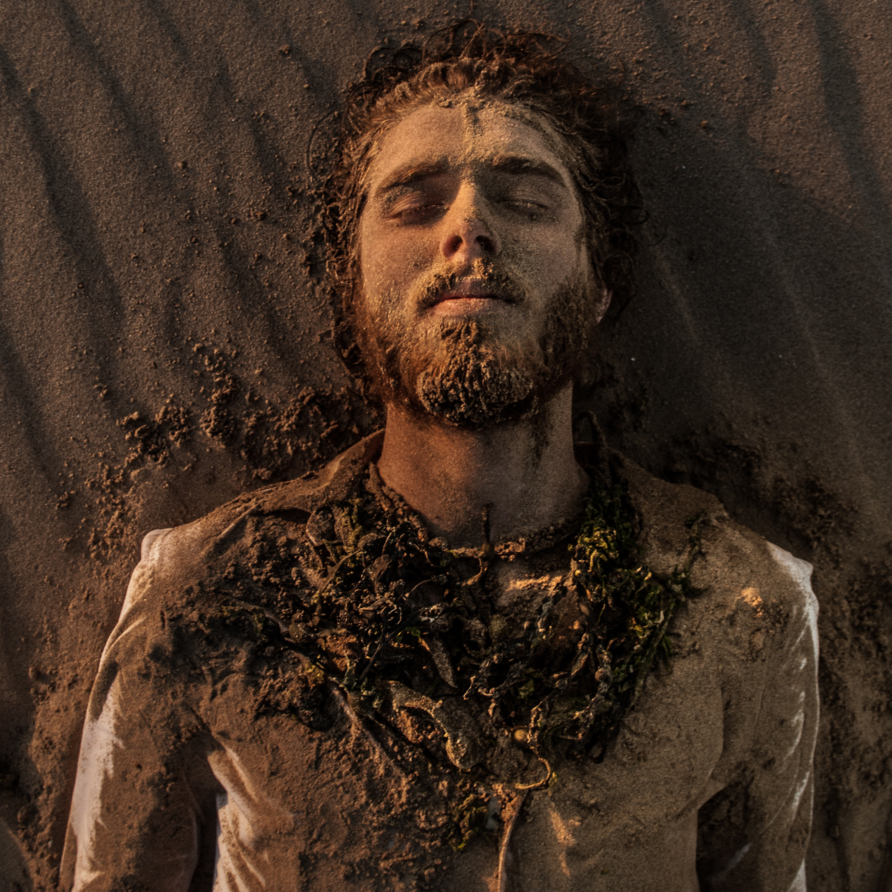
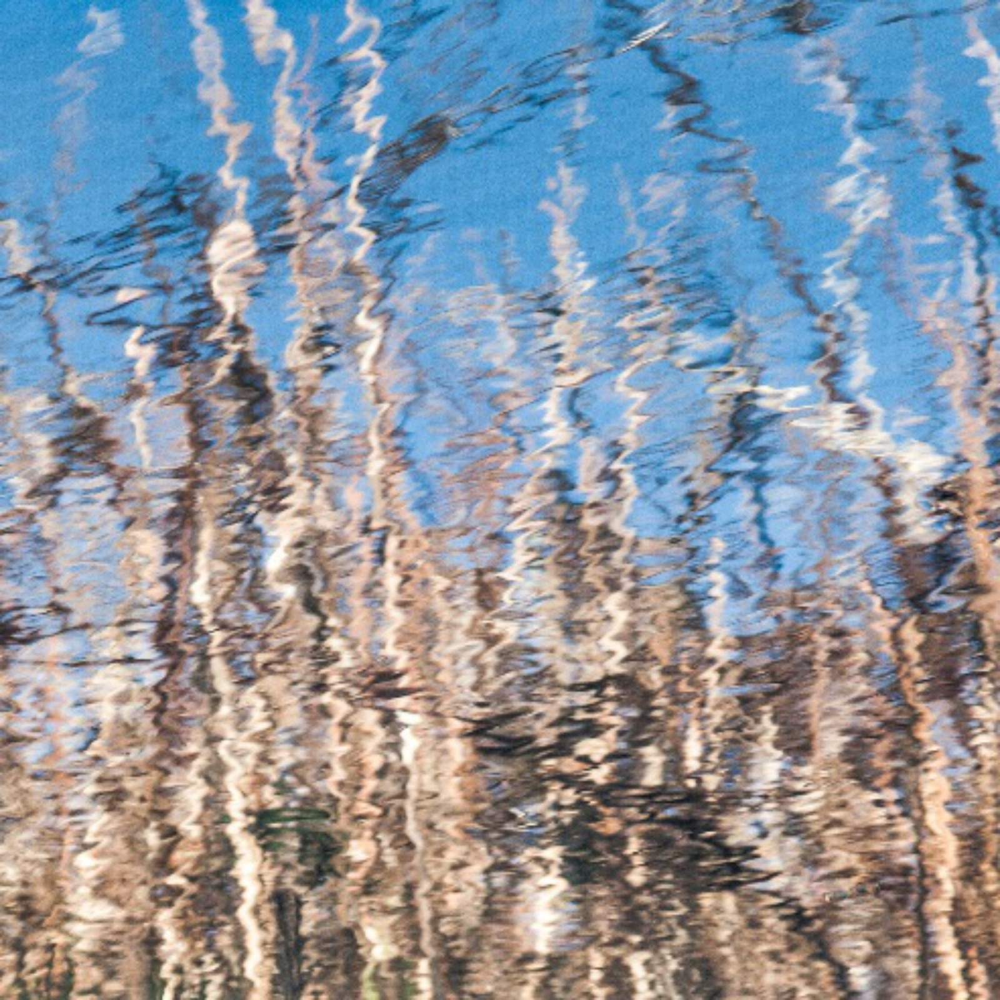
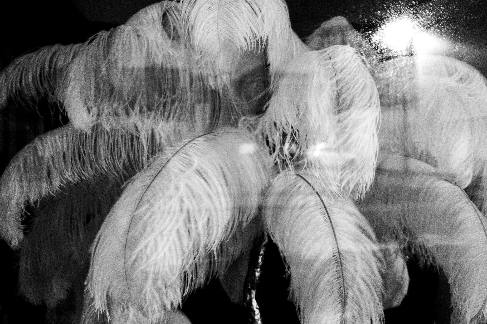
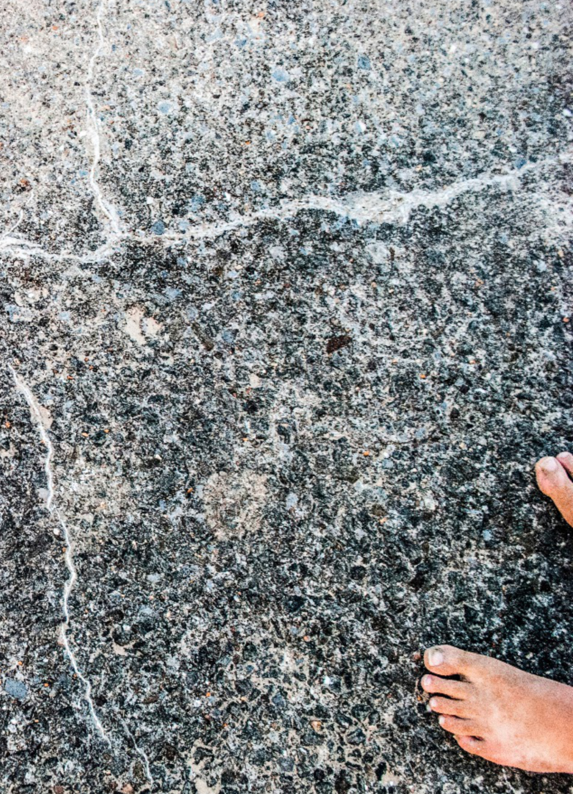

From the Greek, a fundamental change of heart and mind. Not the before. Not the after. The during.

No retouching past colour balance. The grain, the soft focus, the unframed subjects — the photographs had to look the way the body of work feels.
Polish would have been a lie. Transformation is messy; the work is allowed to be too.



Paper weight, sequencing, margins, typography — every decision part of the visual language.
The cover reflects the concept: transformation doesn't declare itself. It arrives quietly.